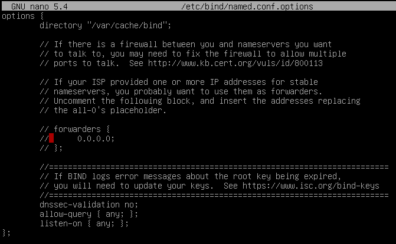
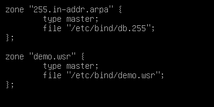
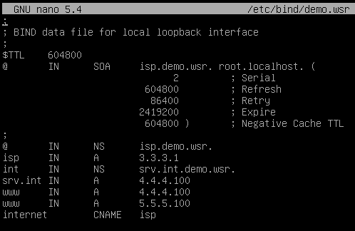
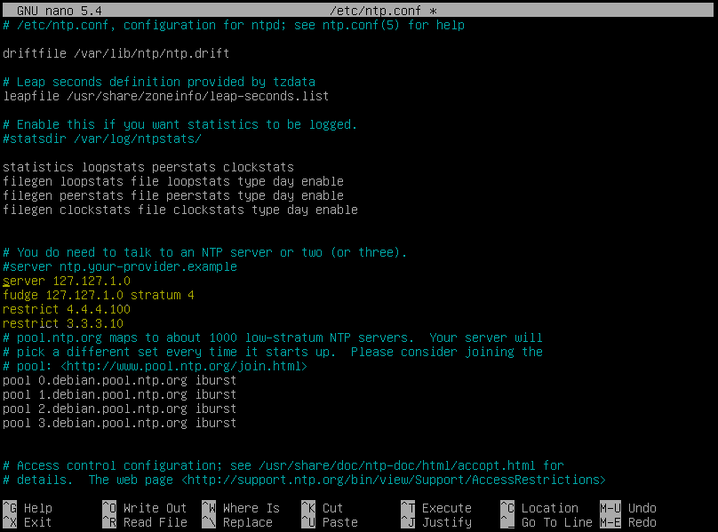

после дисков написать apt-cdrom add
Установка на сервера WEB-L и WEB-R
apt install network-manager nginx vim openssh-server lynx cifs-utils-y
Установка на сервера RTR-L и RTR-R
apt install network-manager vim firewalld openssh-server libreswan -y
Установка на сервер ISP
apt install network-manager bind9 vim openssh-server ntp ntpdate -y
на isp в сторону RTR-L и RTR-R только ip, в сторону CLI ip днс 127.0.0.1 и demo.wsr в домене
везде кроме ISP айпи, днс 192.168.100.200, домен int.demo.wsr
nano /etc/sysctl.conf ip_forward...
sysctl –p
на RTR-L
nmcli connection modify ISP connection.zone external
nmcli connection modify LEFT connection.zone trusted
firewall-cmd --permanent --zone=external --add-service=gre
firewall-cmd --permanent --zone=external --add-forward-port=port=53:proto=udp/tcp:toaddr=192.168.100.200:toport=53
firewall-cmd --permanent --zone=external --add-forward-port=port=80:proto=tcp:toaddr=192.168.100.100:toport=80
firewall-cmd --permanent --zone=external --add-forward-port=port=443:proto=tcp:toaddr=192.168.100.100:toport=443
firewall-cmd --permanent --zone=external --add-forward-port=port=2222:proto=tcp:toaddr=192.168.100.100:toport=22
firewall-cmd --permanent --zone=external --add-forward-port=port=2244:proto=tcp:toaddr=172.16.100.100:toport=22
firewall-cmd --reload
На RTR-R
nmcli connection modify ISP connection.zone external
nmcli connection modify RIGHT connection.zone trusted
firewall-cmd --permanent --zone=external --add-service=gre
firewall-cmd --permanent --zone=external --add-forward-port=port=80:proto=tcp:toaddr=172.16.100.100:toport=80
firewall-cmd --permanent --zone=external --add-forward-port=port=443:proto=tcp:toaddr=172.16.100.100:toport=443
firewall-cmd --reload
GRE на RTR-L local 4.4.4.100 remote 5.5.5.100 , ipv4 10.5.5.1/30
dest 172.16.100.0/24 , next hop 10.5.5.2
на RTR-R наоборот, но dest 192.168.100.0/24
создать 2 файла /etc/ipsec.d/gre.conf и /etc/ipsec.d/gre.secrets, для RTR-L и RTR-R только поменять айпи местами (сначало идёт L)
на gre.conf
conn gre
authby=secret
auto=start
type=transport
left=4.4.4.100
right=5.5.5.100
leftprotoport=gre
rightprotoport=gre
в gre.secrets
4.4.4.100 5.5.5.100 : PSK "TOOR"
Для проверки ipsec status
Настройнка днс на isp
Настройка /etc/bind/named.conf.options

systemctl restart bind9
systemctl status bind9
в /etc/bind/named.conf.default-zones Зона demo.wsr

Копируем зону localhost cp /etc/bind/db.local /etc/bind/demo.wsr

systemctl restart bind9
systemctl status bind9
НАСТРОЙКА NTP НА ISP находится в файле /etc/ntp.conf

systemctl restart/status ntp
Для проверки используем команды:
ntpq –pn
ntpq –c sysinfo
НАСТРОЙКА NTP НА WEB-L/R, RTR-L/R
/etc/systemd/timesyncd.conf раскоментировать NTP и прописать 192.168.100.200
systemctl restart systemd-timesyncd
КОНВЕРТИРУЕМ КЛЮЧИ PFX (при работе сертификата)
На WEB-L
openssl pkcs12 –in web.pfx –nokeys –out cert.pem
openssl pkcs12 –in web.pfx –nocerts –out key.pem
openssl rsa –in key.pem –out key.pem
cp *.pem /etc/nginx/
Копируем cert.pem и key.pem на WEB-R
scp *.pem root@172.16.100.100:/etc/nginx/